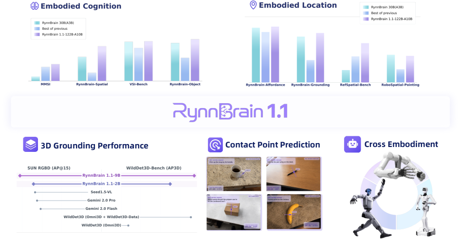
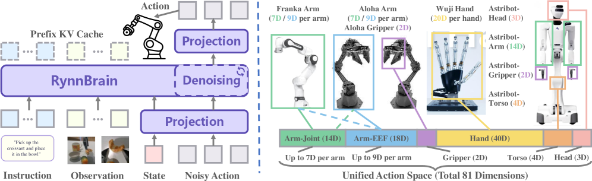

Embodied Foundation ModelSpatial Reasoning3D GroundingContact PointVLA
제출: 2026년 7월 20일 · 백본 Qwen3.5 (2B / 9B / 122B-A10B) · 실로봇 Unitree G1 · Astribot-S1 · Tianji-Wuji
한 줄 요약 (TL;DR)
공간·시간·물리 지반(spatio-temporal, physically grounded) 표현을 통합한 Embodied Foundation Model 시리즈. 2B / 9B / 122B-A10B 3규모로 확장하고, 이전 버전 대비 contact point 예측과 native 3D grounding을 추가해 조작·계획 능력을 강화했다. 공간 벤치 3종(VSI-Bench, MMSI, RefSpatial-Bench)에서 122B가 모든 오픈·상용 모델 상회(VSI 75.0, MMSI 52.0, RefSpatial 79.1). 실로봇 파생 RynnBrain-VLA는 3태스크 평균 성공률 86.67%(Qwen-Based-VLA 60.0, π0.5 65.0), Generalist 버전은 91.67%.
1배경 · 문제의식
범용 MLLM은 시각·언어 이해엔 강하지만 로봇에게 필요한 공간 지반(spatial grounding), 3D 추론, 물리 상호작용 계획에는 약하다. 특히 (1) 자유 텍스트로만 답하는 모델은 로봇이 실행할 좌표·궤적을 산출하기 어렵고, (2) 2D bbox나 텍스트로 접촉 정보를 우회 서술해도 그리퍼 자세로 변환하려면 별도 후처리가 필요하다. RynnBrain 1.1은 spatio-temporal memory와 물리-지반된 명시적 공간 출력(box/point/trajectory/3D box/접촉점)을 하나의 자기회귀 프레임에 통합해, VLA로 이어지는 파이프라인을 단일 모델로 압축한다.
2핵심 Contribution
3-규모 통합 Embodied FM — 2B / 9B / 122B-A10B(MoE) 3규모 릴리즈. Qwen3.5 백본 위 DeepStack + Interleaved MRoPE로 다중모달 통합.
Contact-point 예측 + Native 3D Grounding 추가 — 그리퍼 중심점(x,y)과 in-plane 각도 θ를 직접 예측(2.6M 학습 샘플). 9-D 3D bounding box(중심·크기·방향)를 텍스트 없이 네이티브 출력.
RynnBrain-VLA + 통합 action space — 81-D cross-embodiment action + embodiment-specific 마스킹. Flow-matching 단일 스트림 DiT 헤드. Unitree G1·Astribot-S1·Tianji-Wuji 3플랫폼 실배치.
3Method
아키텍처
Qwen3.5 원리를 따른 decoder-only VLM: 비전 인코더 + 비전-언어 projector + LLM 백본. DeepStack과 Interleaved MRoPE로 이미지/비디오 토큰과 시간 위치 정보를 결합한다. 이미지·비디오는 시간 위치 정보를 붙인 토큰 시퀀스로 인코딩되고, 텍스트뿐 아니라 공간 토큰(bbox, point, trajectory)도 자기회귀로 생성된다.
새 학습 태스크 (1.1 신규)
Contact point 예측: 그리퍼 중심점 p=(x,y) + in-plane 회전각 θ. Grasp-Anything·GraspNet-1B·GraspFactory·Jacquard V2·GraspCluster6D 통합 2.6M 샘플.
물리-aware 계획: AgibotWorld · Open X-Embodiment · Galaxea-G0
4실험 결과
2B 스케일 비교 (Table 3)
벤치
RynnBrain 1.1-2B
1.0-2B
Cosmos 3-Edge
Qwen3.5-2B
VSI-Bench
72.9
70.5
59.2
46.3
MMSI
40.5
34.1
32.3
28.3
RefSpatial
58.5
52.7
48.4
30.0
RynnBrain-Aff.
90.2
89.4
77.6
80.4
9B 스케일 (Table 4)
벤치
RynnBrain 1.1-9B
1.0-8B
Qwen3.5-9B
Molmo2-ER-5B
VSI-Bench
74.9
70.9
61.0
74.5
MMSI
47.0
39.6
13.4
27.7
MindCube
86.9
56.6
33.1
39.0
RefSpatial
67.2
59.2
37.3
61.0
RynnBrain-Ground.
85.4
81.6
33.0
2.4
122B-A10B 최대 스케일 (Table 5)
벤치
1.1-122B-A10B
Cosmos 3 Super
Qwen3.5-122B-A10B
Pelican-VL-72B
VSI-Bench
75.0
60.9
66.6
57.3
MMSI
52.0
41.8
9.2
30.7
MindCube
89.6
40.2
30.8
32.5
RefSpatial
79.1
57.0
69.3
49.5
모든 규모에서 자체 이전 버전(1.0)과 Qwen3.5 백본 대비 큰 개선. 122B는 평가된 모든 상용·오픈 모델을 상회.
3D Grounding (SUN RGB-D · WildDet3D)
SUN RGB-D AP@15: 2B 34.28 · 9B 41.12
WildDet3D-Bench AP3D: 2B 17.36 · 9B 23.44
실로봇 3태스크 성공률 (Table 6, Process/Success)
모델
Sprinkle Petals
Pour Wine
Grab Spatulas
Avg Proc
Avg Succ
Qwen-Based-VLA
75.0 / 65.0
75.0 / 65.0
55.0 / 50.0
68.33
60.00
GR00T N1.7
86.25 / 75.0
77.0 / 65.0
86.67 / 80.0
83.31
73.33
π0.5
65.0 / 60.0
69.0 / 65.0
83.33 / 70.0
72.44
65.00
RynnBrain-VLA
87.5 / 85.0
88.0 / 80.0
98.33 / 95.0
91.28
86.67
RynnBrain-VLA-Generalist
88.75 / 85.0
97.0 / 95.0
96.67 / 95.0
94.14
91.67
Astribot-S1(petals·wine) + Tianji-Wuji(spatulas). Generalist 버전이 태스크 전반에서 최고 성공률.
5Ablation (주요 발견)
비균일 스케일링 법칙(non-uniform scaling laws): 일반 인지는 모델 크기에 단조 증가, 반면 reasoning-intensive 항목은 RynnBrain 1.1은 +38.6%를 얻는 사이 Qwen3.5는 −39.2%로 하락(스케일이 오히려 해가 됨). 로컬라이제이션은 모델 확장보다 데이터 확장이 더 효과적.
Contact-point + 3D grounding 데이터 도입: 소규모 모델(2B)의 조작 관련 벤치(RynnBrain-Affordance)와 3D grounding에서 큰 이득. 대규모 모델은 원래 강한 부분에는 이득이 작지만 공간 벤치 전반에 일관된 향상.
RynnBrain 초기화 vs Qwen 백본: VLA 파인튜닝 시 RynnBrain 초기화가 동일한 아키텍처·데이터로도 실로봇 성공률을 크게 끌어올림 → 사전학습 단계의 물리·공간 지반이 후속 VLA에 이식된다는 근거.
6핵심 Figure / Table

Figure 1 — RynnBrain 1.1 model family overview. 2B/9B/122B-A10B 3규모, 공통 spatio-temporal + physically grounded 프레임에서 embodied perception·공간 추론·로컬라이제이션·계획을 자기회귀 출력으로 통합. (출처: arXiv:2607.17977)

Figure 3 — RynnBrain-VLA 아키텍처. 81-D cross-embodiment action space + embodiment-specific 마스킹, base VLM이 단일 스트림 DiT 역할을 하는 flow-matching action head. (출처: arXiv:2607.17977)
Table 5 (122B 스케일 공간 벤치) — VSI 75.0, MMSI 52.0(Qwen3.5 백본 9.2), MindCube 89.6(다음 40.2), RefSpatial 79.1. Qwen3.5-122B 대비 MMSI 스코어가 5배 이상 상승한 점이 spatio-temporal 사전학습의 효과를 극단적으로 보여준다.